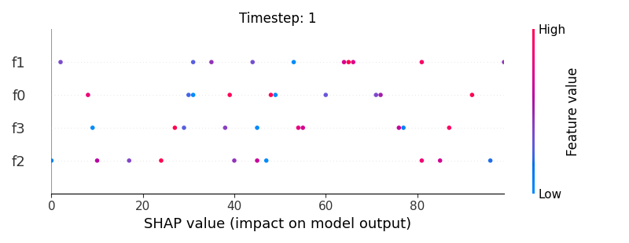
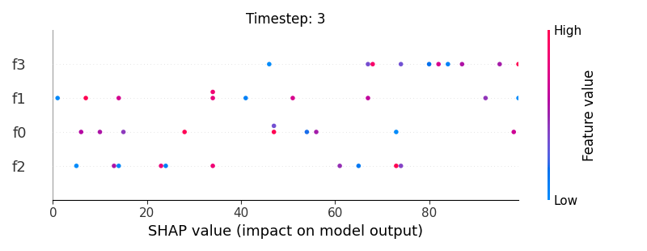
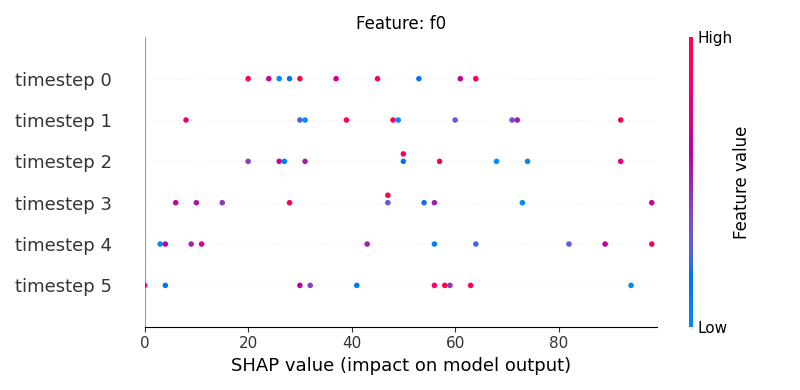
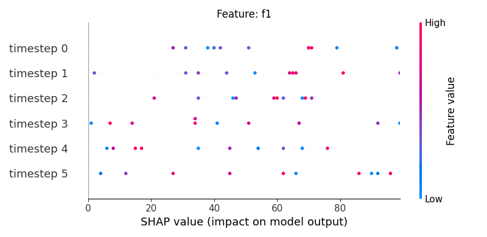
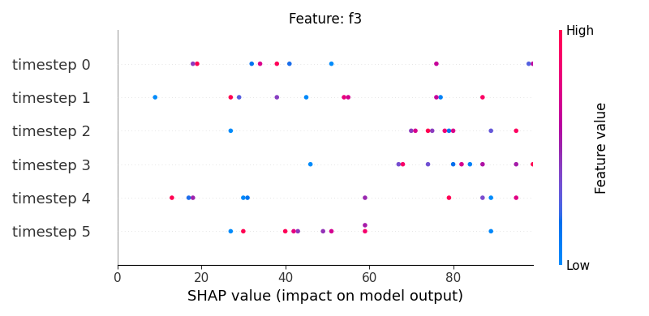
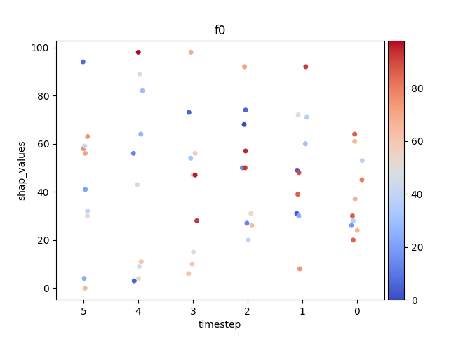
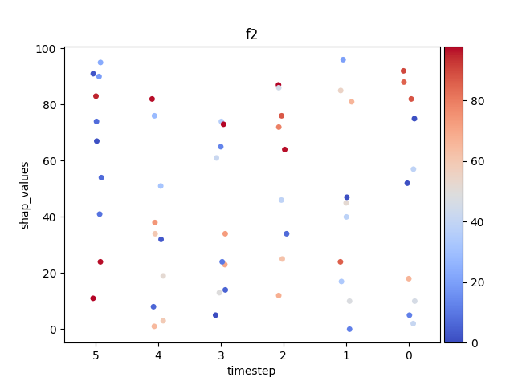

Note
Click here to download the full example code
Shap - Main 05¶
6 7 8 9 10 11 12 13 14 15 16 17 18 19 20 21 22 23 24 25 26 27 28 29 30 31 32 33 34 35 36 37 38 39 40 41 42 43 44 45 46 47 48 49 50 51 52 53 54 55 56 57 58 59 60 61 62 63 64 65 66 67 68 69 70 71 72 73 74 75 76 77 78 79 80 81 82 83 84 85 86 87 88 89 90 91 92 93 94 95 96 97 98 99 100 101 102 103 104 105 106 107 108 109 110 111 112 113 114 115 116 117 118 119 120 121 122 123 124 125 126 127 128 129 130 131 132 133 134 135 136 137 138 139 140 141 142 | # Libraries
import shap
import numpy as np
import pandas as pd
import seaborn as sns
import matplotlib.pyplot as plt
import matplotlib as mpl
import matplotlib.colorbar
import matplotlib.colors
import matplotlib.cm
from mpl_toolkits.axes_grid1 import make_axes_locatable
try:
__file__
TERMINAL = True
except:
TERMINAL = False
# ------------------------
# Methods
# ------------------------
def scalar_colormap(values, cmap, vmin, vmax):
"""This method creates a colormap based on values.
Parameters
----------
values : array-like
The values to create the corresponding colors
cmap : str
The colormap
vmin, vmax : float
The minimum and maximum possible values
Returns
-------
scalar colormap
"""
# Create scalar mappable
norm = mpl.colors.Normalize(vmin=vmin, vmax=vmax, clip=True)
mapper = mpl.cm.ScalarMappable(norm=norm, cmap=cmap)
# Get color map
colormap = sns.color_palette([mapper.to_rgba(i) for i in values])
# Return
return colormap, norm
def scalar_palette(values, cmap, vmin, vmax):
"""This method creates a colorpalette based on values.
Parameters
----------
values : array-like
The values to create the corresponding colors
cmap : str
The colormap
vmin, vmax : float
The minimum and maximum possible values
Returns
-------
scalar colormap
"""
# Create a matplotlib colormap from name
#cmap = sns.light_palette(cmap, reverse=False, as_cmap=True)
cmap = sns.color_palette(cmap, as_cmap=True)
# Normalize to the range of possible values from df["c"]
norm = mpl.colors.Normalize(vmin=vmin, vmax=vmax)
# Create a color dictionary (value in c : color from colormap)
colors = {}
for cval in values:
colors.update({cval : cmap(norm(cval))})
# Return
return colors, norm
def create_random_shap(samples, timesteps, features):
"""Create random LSTM data.
.. note: No need to create the 3D matrix and then reshape to
2D. It would be possible to create directly the 2D
matrix.
Parameters
----------
samples: int
The number of observations
timesteps: int
The number of time steps
features: int
The number of features
Returns
-------
Stacked matrix with the data.
"""
# .. note: Either perform a pre-processing step such as
# normalization or generate the features within
# the appropriate interval.
# Create dataset
x = np.random.randint(low=0, high=100,
size=(samples, timesteps, features))
y = np.random.randint(low=0, high=2, size=samples).astype(float)
i = np.vstack(np.dstack(np.indices((samples, timesteps))))
# Create DataFrame
df = pd.DataFrame(
data=np.hstack((i, x.reshape((-1, features)))),
columns=['sample', 'timestep'] + \
['f%s'%j for j in range(features)]
)
df_stack = df.set_index(['sample', 'timestep']).stack()
df_stack = df_stack
df_stack.name = 'shap_values'
df_stack = df_stack.to_frame()
df_stack.index.names = ['sample', 'timestep', 'features']
df_stack = df_stack.reset_index()
df_stack['feature_values'] = np.random.randint(
low=0, high=100, size=df_stack.shape[0])
return df_stack
def load_shap_file():
data = pd.read_csv('./data/shap.csv')
data = data.iloc[: , 1:]
#data.timestep = data.timestep - (data.timestep.nunique() - 1)
return data
|
Lets generate and/or load the shap values.
147 148 149 150 151 152 153 154 155 156 157 158 159 160 161 162 163 164 165 166 167 168 169 170 | # .. note: The right format to use for plotting depends
# on the library we use. The data structure is
# good when using seaborn
# Load data
data = create_random_shap(10, 6, 4)
#data = load_shap_file()
#data = data[data['sample'] < 100]
shap_values = pd.pivot_table(data,
values='shap_values',
index=['sample', 'timestep'],
columns=['features'])
feature_values = pd.pivot_table(data,
values='feature_values',
index=['sample', 'timestep'],
columns=['features'])
# Show
if TERMINAL:
print("\nShow:")
print(data)
print(shap_values)
print(feature_values)
|
Let’s see how data looks like
174 | data.head(10)
|
Let’s see how shap_values looks like
178 | shap_values.iloc[:10, :5]
|
Let’s see how feature_values looks like
182 | feature_values.iloc[:10, :5]
|
Display using shap.summary_plot¶
The first option is to use the shap library to plot the results.
191 192 193 194 195 196 197 | # Let's define/extract some useful variables.
N = 4 # max loops filter
TIMESTEPS = len(shap_values.index.unique(level='timestep')) # number of timesteps
SAMPLES = len(shap_values.index.unique(level='sample')) # number of samples
shap_min = data.shap_values.min()
shap_max = data.shap_values.max()
|
Now, let’s display the shap values for all features in each timestep.
202 203 204 205 206 207 208 209 210 211 212 213 214 215 216 217 218 219 220 221 222 | # For each timestep (visualise all features)
for i, step in enumerate(range(TIMESTEPS)[:N]):
# Show
#print('%2d. %s' % (i, step))
# .. note: First option (commented) is only necessary if we work
# with a numpy array. However, since we are using a DataFrame
# with the timestep, we can index by that index level.
# Compute indices
#indice = np.arange(SAMPLES)*TIMESTEPS + step
indice = shap_values.index.get_level_values('timestep') == i
# Create auxiliary matrices
shap_aux = shap_values.iloc[indice]
feat_aux = feature_values.iloc[indice]
# Display
plt.figure()
plt.title("Timestep: %s" % i)
shap.summary_plot(shap_aux.to_numpy(), feat_aux, show=False)
plt.xlim(shap_min, shap_max)
|

- 

- 
Now, let’s display the shap values for all timesteps of each feature.
227 228 229 230 231 232 233 234 235 236 237 238 239 240 241 242 243 244 245 | # For each feature (visualise all time-steps)
for i, f in enumerate(shap_values.columns[:N]):
# Show
#print('%2d. %s' % (i, f))
# Create auxiliary matrices (select feature and reshape)
shap_aux = shap_values.iloc[:, i] \
.to_numpy().reshape(-1, TIMESTEPS)
feat_aux = feature_values.iloc[:, i] \
.to_numpy().reshape(-1, TIMESTEPS)
feat_aux = pd.DataFrame(feat_aux,
columns=['timestep %s'%j for j in range(TIMESTEPS)]
)
# Show
plt.figure()
plt.title("Feature: %s" % f)
shap.summary_plot(shap_aux, feat_aux, sort=False, show=False)
plt.xlim(shap_min, shap_max)
|
- 
- 
- 
Note
If y-axis represents timesteps the sort parameter
in the summary_plot function is set to False.
Display using sns.stripplot¶
Warning
This method seems to be quite slow.
Let’s display the shap values for each feature and all time steps. In contrast to the previous example, the timesteps are now displayed on the x-axis and the y-axis contains the shap values.
262 263 264 265 266 267 268 269 270 271 272 273 274 275 276 277 278 279 280 281 282 283 284 285 286 287 288 289 290 291 292 293 294 295 296 297 298 299 300 301 302 303 304 | def add_colorbar(fig, cmap, norm):
""""""
divider = make_axes_locatable(plt.gca())
ax_cb = divider.new_horizontal(size="5%", pad=0.05)
fig.add_axes(ax_cb)
cb1 = matplotlib.colorbar.ColorbarBase(ax_cb,
cmap=cmap, norm=norm, orientation='vertical')
# Loop
for i, (name, df) in enumerate(data.groupby('features')):
# Get colormap
values = df.feature_values
cmap, norm = scalar_palette(values=values, cmap='coolwarm',
vmin=values.min(), vmax=values.max())
print(df)
# Display
fig, ax = plt.subplots()
ax = sns.stripplot(x='timestep',
y='shap_values',
hue='feature_values',
palette=cmap,
data=df,
ax=ax)
# Needed for older matplotlib versions
cmap = matplotlib.cm.get_cmap('coolwarm')
# Configure axes
plt.title(name)
plt.legend([], [], frameon=False)
ax.invert_xaxis()
add_colorbar(plt.gcf(), cmap, norm)
# End
if int(i) > N:
break
# Show
plt.show()
|
- 

- 
Out:
sample timestep features shap_values feature_values
0 0 0 f0 47 88
4 0 1 f0 54 67
8 0 2 f0 39 8
12 0 3 f0 49 14
16 0 4 f0 80 60
20 0 5 f0 99 20
24 1 0 f0 64 40
28 1 1 f0 26 90
32 1 2 f0 22 70
36 1 3 f0 59 86
40 1 4 f0 40 61
44 1 5 f0 77 89
48 2 0 f0 94 42
52 2 1 f0 57 19
56 2 2 f0 58 72
60 2 3 f0 2 38
64 2 4 f0 97 94
68 2 5 f0 98 11
72 3 0 f0 8 92
76 3 1 f0 10 1
80 3 2 f0 93 83
84 3 3 f0 48 59
88 3 4 f0 95 0
92 3 5 f0 72 20
96 4 0 f0 84 66
100 4 1 f0 22 89
104 4 2 f0 10 5
108 4 3 f0 98 7
112 4 4 f0 49 85
116 4 5 f0 65 21
120 5 0 f0 9 79
124 5 1 f0 38 32
128 5 2 f0 39 31
132 5 3 f0 96 45
136 5 4 f0 49 69
140 5 5 f0 33 73
144 6 0 f0 46 64
148 6 1 f0 24 13
152 6 2 f0 45 2
156 6 3 f0 13 22
160 6 4 f0 28 70
164 6 5 f0 99 76
168 7 0 f0 66 94
172 7 1 f0 74 86
176 7 2 f0 46 64
180 7 3 f0 12 37
184 7 4 f0 17 62
188 7 5 f0 82 56
192 8 0 f0 88 61
196 8 1 f0 6 58
200 8 2 f0 84 6
204 8 3 f0 11 41
208 8 4 f0 69 56
212 8 5 f0 42 36
216 9 0 f0 91 92
220 9 1 f0 45 28
224 9 2 f0 73 10
228 9 3 f0 10 54
232 9 4 f0 58 30
236 9 5 f0 68 1
sample timestep features shap_values feature_values
1 0 0 f1 14 73
5 0 1 f1 21 14
9 0 2 f1 35 0
13 0 3 f1 89 70
17 0 4 f1 52 8
21 0 5 f1 48 69
25 1 0 f1 72 49
29 1 1 f1 26 86
33 1 2 f1 90 52
37 1 3 f1 38 91
41 1 4 f1 82 13
45 1 5 f1 80 98
49 2 0 f1 17 97
53 2 1 f1 34 18
57 2 2 f1 91 67
61 2 3 f1 61 97
65 2 4 f1 28 53
69 2 5 f1 24 40
73 3 0 f1 7 51
77 3 1 f1 63 36
81 3 2 f1 40 26
85 3 3 f1 6 74
89 3 4 f1 18 99
93 3 5 f1 77 33
97 4 0 f1 66 39
101 4 1 f1 68 8
105 4 2 f1 49 97
109 4 3 f1 83 30
113 4 4 f1 83 12
117 4 5 f1 31 90
121 5 0 f1 76 16
125 5 1 f1 39 70
129 5 2 f1 36 47
133 5 3 f1 2 46
137 5 4 f1 14 72
141 5 5 f1 93 71
145 6 0 f1 29 36
149 6 1 f1 4 75
153 6 2 f1 28 87
157 6 3 f1 75 23
161 6 4 f1 96 59
165 6 5 f1 68 37
169 7 0 f1 48 58
173 7 1 f1 95 2
177 7 2 f1 76 51
181 7 3 f1 16 32
185 7 4 f1 32 46
189 7 5 f1 0 61
193 8 0 f1 65 68
197 8 1 f1 49 25
201 8 2 f1 90 30
205 8 3 f1 81 25
209 8 4 f1 71 0
213 8 5 f1 46 27
217 9 0 f1 69 53
221 9 1 f1 76 46
225 9 2 f1 71 93
229 9 3 f1 87 52
233 9 4 f1 76 58
237 9 5 f1 71 35
sample timestep features shap_values feature_values
2 0 0 f2 63 32
6 0 1 f2 16 98
10 0 2 f2 2 9
14 0 3 f2 72 37
18 0 4 f2 36 90
22 0 5 f2 7 34
26 1 0 f2 67 63
30 1 1 f2 25 23
34 1 2 f2 64 66
38 1 3 f2 21 29
42 1 4 f2 97 10
46 1 5 f2 52 14
50 2 0 f2 24 32
54 2 1 f2 60 5
58 2 2 f2 25 20
62 2 3 f2 10 27
66 2 4 f2 30 3
70 2 5 f2 50 66
74 3 0 f2 85 67
78 3 1 f2 33 54
82 3 2 f2 25 59
86 3 3 f2 34 44
90 3 4 f2 9 11
94 3 5 f2 6 56
98 4 0 f2 15 50
102 4 1 f2 49 22
106 4 2 f2 23 5
110 4 3 f2 63 69
114 4 4 f2 68 51
118 4 5 f2 76 79
122 5 0 f2 20 80
126 5 1 f2 66 13
130 5 2 f2 41 39
134 5 3 f2 73 45
138 5 4 f2 92 80
142 5 5 f2 49 87
146 6 0 f2 33 96
150 6 1 f2 29 39
154 6 2 f2 13 74
158 6 3 f2 10 67
162 6 4 f2 95 7
166 6 5 f2 89 6
170 7 0 f2 5 98
174 7 1 f2 17 11
178 7 2 f2 11 66
182 7 3 f2 46 62
186 7 4 f2 25 18
190 7 5 f2 57 87
194 8 0 f2 41 2
198 8 1 f2 52 56
202 8 2 f2 88 63
206 8 3 f2 63 57
210 8 4 f2 26 13
214 8 5 f2 87 94
218 9 0 f2 90 60
222 9 1 f2 15 52
226 9 2 f2 62 14
230 9 3 f2 60 51
234 9 4 f2 25 13
238 9 5 f2 3 77
sample timestep features shap_values feature_values
3 0 0 f3 66 91
7 0 1 f3 32 31
11 0 2 f3 61 83
15 0 3 f3 38 75
19 0 4 f3 28 4
23 0 5 f3 12 31
27 1 0 f3 93 64
31 1 1 f3 40 3
35 1 2 f3 10 63
39 1 3 f3 4 13
43 1 4 f3 51 44
47 1 5 f3 41 18
51 2 0 f3 13 3
55 2 1 f3 49 87
59 2 2 f3 29 60
63 2 3 f3 29 68
67 2 4 f3 4 76
71 2 5 f3 4 62
75 3 0 f3 84 84
79 3 1 f3 73 53
83 3 2 f3 61 91
87 3 3 f3 34 94
91 3 4 f3 1 9
95 3 5 f3 58 81
99 4 0 f3 20 54
103 4 1 f3 70 71
107 4 2 f3 53 77
111 4 3 f3 14 27
115 4 4 f3 8 50
119 4 5 f3 66 17
123 5 0 f3 83 43
127 5 1 f3 92 74
131 5 2 f3 28 65
135 5 3 f3 25 5
139 5 4 f3 23 2
143 5 5 f3 98 69
147 6 0 f3 6 31
151 6 1 f3 68 86
155 6 2 f3 2 62
159 6 3 f3 72 91
163 6 4 f3 28 77
167 6 5 f3 8 8
171 7 0 f3 19 36
175 7 1 f3 73 13
179 7 2 f3 4 58
183 7 3 f3 7 74
187 7 4 f3 85 47
191 7 5 f3 22 79
195 8 0 f3 31 12
199 8 1 f3 94 85
203 8 2 f3 14 63
207 8 3 f3 80 0
211 8 4 f3 48 61
215 8 5 f3 10 10
219 9 0 f3 31 79
223 9 1 f3 3 10
227 9 2 f3 83 88
231 9 3 f3 87 37
235 9 4 f3 59 42
239 9 5 f3 11 57
Display using sns.swarmplot¶
Let’s display the shap values for each timestep.
318 319 320 321 322 323 324 325 326 327 328 329 330 331 332 333 334 335 336 337 338 339 340 341 342 343 344 345 346 347 348 349 350 351 352 353 354 355 356 357 358 359 360 361 362 363 364 365 366 367 368 369 370 371 372 373 374 375 376 377 378 379 380 381 382 383 384 385 386 387 388 389 390 391 392 | # Loop
for i, (name, df) in enumerate(data.groupby('features')):
# Get colormap
values = df.feature_values
cmap, norm = scalar_palette(values=values, cmap='coolwarm',
vmin=values.min(), vmax=values.max())
# Display
fig, ax = plt.subplots()
ax = sns.swarmplot(x='timestep',
y='shap_values',
hue='feature_values',
palette=cmap,
data=df,
size=2,
ax=ax)
# Needed for older matplotlib versions
cmap = matplotlib.cm.get_cmap('coolwarm')
# Configure axes
plt.title(name)
plt.legend([], [], frameon=False)
ax.invert_xaxis()
add_colorbar(plt.gcf(), cmap, norm)
# End
if int(i) > N:
break
# Show
plt.show()
"""
sns.set_theme(style="ticks")
# Create a dataset with many short random walks
rs = np.random.RandomState(4)
pos = rs.randint(-1, 2, (20, 5)).cumsum(axis=1)
pos -= pos[:, 0, np.newaxis]
step = np.tile(range(5), 20)
walk = np.repeat(range(20), 5)
df = pd.DataFrame(np.c_[pos.flat, step, walk],
columns=["position", "step", "walk"])
# Initialize a grid of plots with an Axes for each walk
#grid = sns.FacetGrid(df_stack, col="walk", hue="f", palette="tab20c",
# col_wrap=4, height=1.5)
grid = sns.FacetGrid(df_stack, hue="f",
palette="tab20c", height=1.5)
# Draw a horizontal line to show the starting point
grid.refline(y=0, linestyle=":")
# Draw a line plot to show the trajectory of each random walk
grid.map(plt.plot, "t", "value", marker="o")
# Adjust the tick positions and labels
grid.set(xticks=np.arange(5), yticks=[-3, 3],
xlim=(-.5, 4.5), ylim=(-3.5, 3.5))
# Adjust the arrangement of the plots
grid.fig.tight_layout(w_pad=1)
"""
#plt.show()
|

Out:
'\nsns.set_theme(style="ticks")\n\n# Create a dataset with many short random walks\nrs = np.random.RandomState(4)\npos = rs.randint(-1, 2, (20, 5)).cumsum(axis=1)\npos -= pos[:, 0, np.newaxis]\nstep = np.tile(range(5), 20)\nwalk = np.repeat(range(20), 5)\ndf = pd.DataFrame(np.c_[pos.flat, step, walk],\n columns=["position", "step", "walk"])\n# Initialize a grid of plots with an Axes for each walk\n#grid = sns.FacetGrid(df_stack, col="walk", hue="f", palette="tab20c",\n# col_wrap=4, height=1.5)\n\ngrid = sns.FacetGrid(df_stack, hue="f",\n palette="tab20c", height=1.5)\n\n# Draw a horizontal line to show the starting point\ngrid.refline(y=0, linestyle=":")\n\n# Draw a line plot to show the trajectory of each random walk\ngrid.map(plt.plot, "t", "value", marker="o")\n\n# Adjust the tick positions and labels\ngrid.set(xticks=np.arange(5), yticks=[-3, 3],\n xlim=(-.5, 4.5), ylim=(-3.5, 3.5))\n\n# Adjust the arrangement of the plots\ngrid.fig.tight_layout(w_pad=1)\n\n'
Display using sns.FacetGrid¶
399 400 401 | #g = sns.FacetGrid(df_stack, col="f", hue='original')
#g.map(sns.swarmplot, "t", "value", alpha=.7)
#g.add_legend()
|
Display using shap.beeswarm¶
409 410 411 412 413 | # REF: https://github.com/slundberg/shap/blob/master/shap/plots/_beeswarm.py
#
# .. note: It needs a kernel explainer, and while it works with
# common kernels (plot_main07.py) it does not work with
# the DeepKernel for some reason (mask related).
|
Total running time of the script: ( 0 minutes 14.167 seconds)